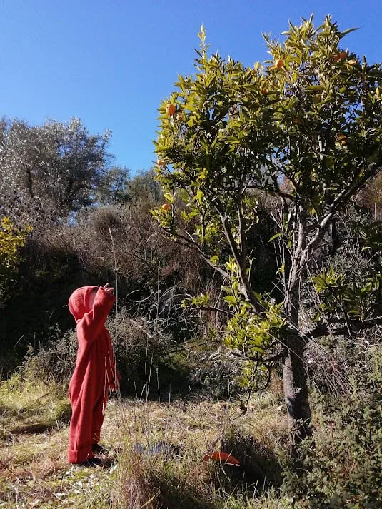
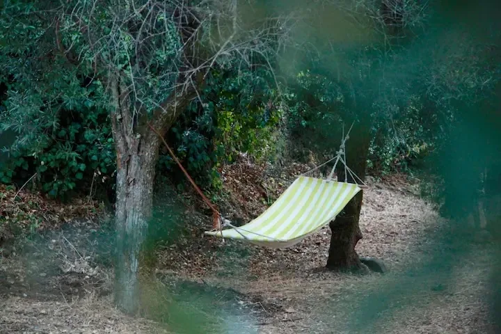
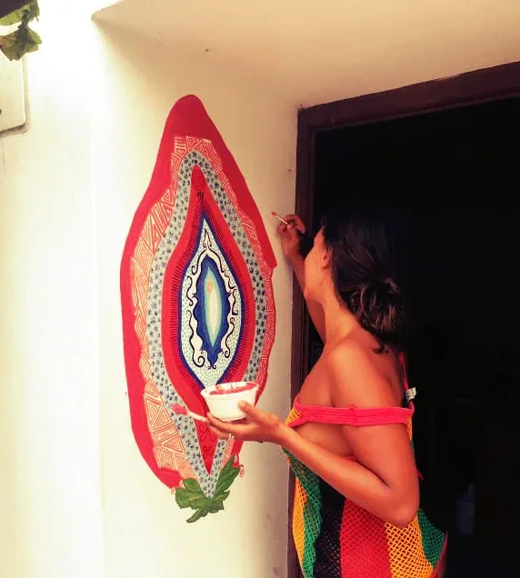
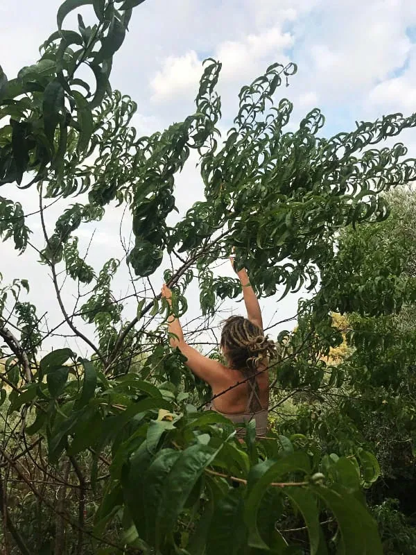
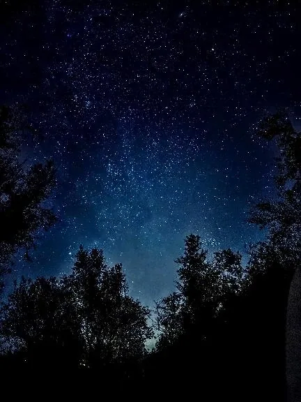

Casa Fluxus on Strikingly
This template doesn't support hiding the navigation bar.
-
CASA FLUXUS
Shaping Collective Guardianships of the Land
In Discovery Co-Living Research
Connecting Regenerative Culture inter-Weavers
Seeding Collective Guardianships
Blossoming Collaborative realms
Inner, inter and With the Lands.
ActiVisioning a global Map of Home Land Guardianships and Evolutioship Living, Re-Imagining, Sourcing and Epicentering Life Centered Culture.
She`s calling you.
-
Interspecies web
Guardians of the Land
We dont own. We are in reverence.
-
Collaborative Co-Living
Theres a Life wisper. Lets Listen.
What happens when we come together with the Land, unveiling the Regenerative and Collaborative realms?
What happens when we Be-come Collaboration?;
What happens when we Be-come the Soil and Source of the new Culture?
This Land embraces us on our unfolding of new inner organizations, new paths, new maps.
Shared house rooms, campervan parking, or camping space;
Bring your creation for expansion;
-
Global to Local
Weaving Life centered Culture.
-
Re-imagining education
-




Volunteering
Caring the land, beautifying, forest gardening, restoring ancient stone walls, carpentry, organizing, improving spaces, photography, child space holding, land art, map creation...

Create
You know you have something to deliver here. Lets collaborate!
-
Cook for me
What is food?
-
FLUXUS Circles
Intergenerational connecting spaces. Doing. Together.
We are on knitting, crochet, sewing, carpentry, singing, gardening, re-imagining education, upcycling, ilustration, sovereignity, Listening and Possibility CIRCLES. Calling you to add your uniqueness to this biodiverse realm. 1+1=3
-
Reusing, upcycling, creating and re-guiding ressources.
-
Reach Out
Drop us a line, lets collaborate!
-
Who stayed here?
Reviews
Lovely sanctuary with a diversity of trees and plants. The good healthy soil and singing birds nourished us throughout our stay. Ana’s
intentions for the land and approach with people, brought inspiration up in us. I recommend passing there if you are looking for a peaceful and inspiring place.Ali - New Zeland
"So to me fluxus is a refuge, a place to experience true human nature, a safe haven, a source of inspiration, an invitation, a home away from home. A lot of this has to do with Ana and her presence, her non-judgmental nature and true openness and ability to share.”
Lotte - Belgium
My heart guided me to this land. I needed a « pause » in my nomadic journey and I found a place to think, feel, be and regenerate myself.
The land is gorgeous, nourishing and extremely feminine. Every spaces & each corners are treated with care and love. I m grateful and
touched that I have met Ana & her sons, sharing some family moment.
Very inspiring stay.Laura, Netherlands
Excellent place in wonderful nature if you want to discover more of yourself, with a lot of space for your initiative and sense of creativity. The activities on the ground are various so you will never be bored, with amazing surroundings to explore during free time.
Autonomy is appreciated and recommended. And I also recommend you to come here to meet Ana, a person with whom is worthed to share deep and important conversations. Thank you for everything!
Silvia - Italy
It was a wonderful experience. The place is magic, Castelo de Vide was very special to me. Ana and her space are strong, different, cool, enchanted. Even though I didn't have much comfort or amenities, it was a great stay. I really feel free, motivated and touched by a special energy.
I 'd like to thanks for all! I hope to come back!
André - Brasil
"After coming to this place we decided to start with writing a travel diary. We dont want to forget all the amazing people we met on our journey and the pieces of universe we face. Thank you for this energy!”
Antonella e Adrian, Italy
Fluxus is a welcoming healing place where people from different countries and cultures come together and can be who they truly are, nestled in the pure, raw and beautiful nature of Portugal. Exchanging knowledge, opinions, habits and food as well as creating opportunities of emotional and physical growth make Fluxus an attraction for releasing the old and welcoming the new. But also for being and laughing together with people, seeing and feeling them. As we all have the same fears and doubts in this fast world we live in.”
Verena - Germany
"Fluxus (for me) is a place to restore energy to connect to myself and each other... to find peace and creativity”
Judith - Hungary
Amazing space. It was a pleasure to be a small part of the change and fluidity that is Fluxus and help create and improve this house even more. Ana is such an energetic, positive and warm person and i admire her for putting so much of her strenght in all these fabulous ideas and projects.”
Lea, Germany
This was such a beautiful experience and touched our hearts in many ways and moments..
You become a part of the land and can learn to be a guardian for Mother Nature. We learned a lot about the balance of giving and receiving. It was a pleasure to give back, as we received so many inspirations and input from Ana concerning deep topics like purpose and values to share with the world. There was always an encouraging environment to show and share our gifts, to express from our hearts.
We could write so much more... but to bring this whole experience into one word, it's simply MAGIC.Julian & Johanna
One of my most cherished and transformative experiences on the sacred land with Ana as the guardian of the land, the voice of the Divine with Ravi as the server of bringing forth truth to the inner child self.
Every conversation was healing, every silence nurturing.
Ana welcomes everyone with an open heart ready to share everything she can offer which overfilled my heart with gratitude, love and joy.
We are here to remember and remind each other again and again. When the ego moves aside the raw beauty of life comes forth, which I had the great honour to experience in togetherness, truthfulness and vulnerability.
If you are someone who is interested, focused or driven by evolution in soul, mind and land that is the perfect place for you. Love is all around, also the love that can truly tell you when something is not in balance.
I learned to see my light, my delivery of service and a deeper understanding of integrity! Words can not speak what gratitude and love I feel for the place and all inhabitants occupying the sacredness. Loveee, LeonaThe days I spent at Anas land, still live inside of me, a month after I departed. I feel very grateful that I got the chance to spend time at this inspiring and creative-evolving land with Ana & Ravi. Somehow I knew upon my arrival,
that this place would move something deep inside of me, and inspire me to create and express what lives inside my heart.
I felt very inspired staying at this beautiful, abundant land.
I look forward to one day coming back to visit, and to see how the land has unfolded.
Cecilie -
caravan stay
A partnership with Seiva Atelier, this tiny home now at the land may be looking for residents